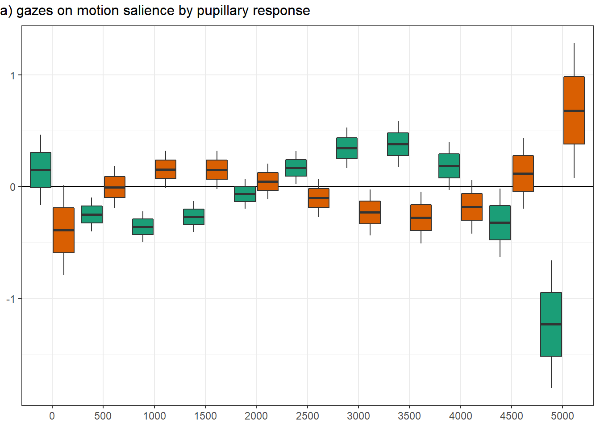

main analyses
sensory salience
2.5 % 97.5 %
vid_socialTRUE -0.29 -0.42 -0.15 2.5 % 97.5 %
rpd_z -0.02 -0.04 -0.01 contrast estimate SE df asymp.LCL asymp.UCL
FALSE - TRUE 0.266 0.0712 Inf 0.127 0.406
Results are averaged over the levels of: t1_diagnosis, t1_sex
Note: contrasts are still on the scale scale
Degrees-of-freedom method: asymptotic
Confidence level used: 0.95 vid_social rpd_z.trend SE df asymp.LCL asymp.UCL
FALSE -0.0360 0.00773 Inf -0.0512 -0.02090
TRUE -0.0119 0.00937 Inf -0.0303 0.00647
Results are averaged over the levels of: t1_diagnosis, t1_sex
Degrees-of-freedom method: asymptotic
Confidence level used: 0.95 | Sum Sq | df1 | df2 | F | p | p_adj | |
|---|---|---|---|---|---|---|
| group | 1.488 | 1 | 263.953 | 1.704 | 0.193 | 0.579 |
| pupillary response (PR) | 17.759 | 1 | 56869.342 | 20.346 | 0.000 | 0.000 |
| video category (VC) | 13.128 | 1 | 79.824 | 15.040 | 0.000 | 0.000 |
| time^1 | 8.803 | 1 | 68233.615 | 10.085 | 0.001 | 0.003 |
| time^2 | 6.456 | 1 | 68247.752 | 7.396 | 0.007 | 0.021 |
| time^3 | 4.577 | 1 | 68247.374 | 5.243 | 0.022 | 0.066 |
| sex | 0.000 | 1 | 241.875 | 0.000 | 0.985 | 1.000 |
| age | 0.934 | 1 | 270.110 | 1.070 | 0.302 | 0.906 |
| perceptual IQ | 1.575 | 1 | 266.350 | 1.804 | 0.180 | 0.540 |
| ADHD inattention | 1.838 | 1 | 272.232 | 2.105 | 0.148 | 0.444 |
| anxiety | 0.382 | 1 | 209.388 | 0.438 | 0.509 | 1.000 |
| depression | 0.071 | 1 | 223.502 | 0.082 | 0.775 | 1.000 |
| accuracy | 1.743 | 1 | 303.422 | 1.997 | 0.159 | 0.477 |
| precision | 0.082 | 1 | 369.914 | 0.093 | 0.760 | 1.000 |
| center deviation | 781.640 | 1 | 61947.894 | 895.506 | 0.000 | 0.000 |
| group x PR | 2.884 | 1 | 59515.863 | 3.304 | 0.069 | 0.207 |
| group x VC | 1.723 | 1 | 55964.028 | 1.974 | 0.160 | 0.480 |
| PR x VC | 6.212 | 1 | 31514.370 | 7.117 | 0.008 | 0.024 |
| group x time^1 | 1.055 | 1 | 68183.309 | 1.208 | 0.272 | 0.816 |
| group x time^2 | 0.819 | 1 | 68193.552 | 0.938 | 0.333 | 0.999 |
| group x time^3 | 0.630 | 1 | 68197.508 | 0.722 | 0.396 | 1.000 |
| PR x time^1 | 0.218 | 1 | 68201.553 | 0.250 | 0.617 | 1.000 |
| PR x time^2 | 0.010 | 1 | 68221.075 | 0.011 | 0.916 | 1.000 |
| PR x time^3 | 0.014 | 1 | 68226.630 | 0.016 | 0.899 | 1.000 |
| VC x time^1 | 0.443 | 1 | 68228.689 | 0.507 | 0.476 | 1.000 |
| VC x time^2 | 1.106 | 1 | 68243.382 | 1.267 | 0.260 | 0.780 |
| VC x time^3 | 0.958 | 1 | 68246.420 | 1.097 | 0.295 | 0.885 |
| group x PR x VC | 0.048 | 1 | 32697.898 | 0.055 | 0.814 | 1.000 |
| group x PR x time^1 | 0.594 | 1 | 68195.824 | 0.680 | 0.410 | 1.000 |
| group x PR x time^2 | 0.193 | 1 | 68217.200 | 0.221 | 0.638 | 1.000 |
| group x PR x time^3 | 0.027 | 1 | 68223.447 | 0.030 | 0.862 | 1.000 |
| group x VC x time^1 | 0.235 | 1 | 68193.931 | 0.269 | 0.604 | 1.000 |
| group x VC x time^2 | 0.280 | 1 | 68213.219 | 0.321 | 0.571 | 1.000 |
| group x VC x time^3 | 0.246 | 1 | 68214.407 | 0.282 | 0.595 | 1.000 |
| PR x VC x time^1 | 0.950 | 1 | 68222.350 | 1.088 | 0.297 | 0.891 |
| PR x VC x time^2 | 0.600 | 1 | 68235.192 | 0.687 | 0.407 | 1.000 |
| PR x VC x time^3 | 0.725 | 1 | 68234.909 | 0.830 | 0.362 | 1.000 |
| group x PR x VC x time^1 | 1.498 | 1 | 68207.766 | 1.716 | 0.190 | 0.570 |
| group x PR x VC x time^2 | 1.613 | 1 | 68221.650 | 1.848 | 0.174 | 0.522 |
| group x PR x VC x time^3 | 1.517 | 1 | 68223.554 | 1.737 | 0.187 | 0.561 |
| Sum Sq | df1 | df2 | F | p | p_adj | |
|---|---|---|---|---|---|---|
| group | 0.001 | 1 | 285.315 | 0.001 | 0.975 | 1.000 |
| pupillary response (PR) | 1.180 | 1 | 44791.680 | 1.320 | 0.251 | 0.753 |
| video category (VC) | 3.018 | 1 | 81.300 | 3.375 | 0.070 | 0.210 |
| time^1 | 177.600 | 1 | 68308.605 | 198.591 | 0.000 | 0.000 |
| time^2 | 191.596 | 1 | 68315.817 | 214.242 | 0.000 | 0.000 |
| time^3 | 178.729 | 1 | 68313.754 | 199.854 | 0.000 | 0.000 |
| sex | 0.017 | 1 | 245.692 | 0.019 | 0.892 | 1.000 |
| age | 0.104 | 1 | 281.760 | 0.117 | 0.733 | 1.000 |
| perceptual IQ | 0.346 | 1 | 262.457 | 0.387 | 0.535 | 1.000 |
| ADHD inattention | 1.056 | 1 | 294.920 | 1.181 | 0.278 | 0.834 |
| anxiety | 0.001 | 1 | 200.364 | 0.001 | 0.979 | 1.000 |
| depression | 0.177 | 1 | 225.576 | 0.198 | 0.657 | 1.000 |
| accuracy | 1.494 | 1 | 374.975 | 1.670 | 0.197 | 0.591 |
| precision | 2.127 | 1 | 489.657 | 2.378 | 0.124 | 0.372 |
| center deviation | 120.229 | 1 | 51195.856 | 134.440 | 0.000 | 0.000 |
| group x PR | 1.665 | 1 | 48364.900 | 1.862 | 0.172 | 0.516 |
| group x VC | 0.640 | 1 | 48780.675 | 0.715 | 0.398 | 1.000 |
| PR x VC | 0.479 | 1 | 16000.653 | 0.536 | 0.464 | 1.000 |
| group x time^1 | 1.123 | 1 | 68269.023 | 1.256 | 0.262 | 0.786 |
| group x time^2 | 0.532 | 1 | 68274.625 | 0.595 | 0.441 | 1.000 |
| group x time^3 | 0.289 | 1 | 68276.093 | 0.323 | 0.570 | 1.000 |
| PR x time^1 | 0.139 | 1 | 68280.631 | 0.156 | 0.693 | 1.000 |
| PR x time^2 | 0.996 | 1 | 68290.110 | 1.113 | 0.291 | 0.873 |
| PR x time^3 | 1.812 | 1 | 68291.225 | 2.026 | 0.155 | 0.465 |
| VC x time^1 | 4.957 | 1 | 68304.534 | 5.542 | 0.019 | 0.057 |
| VC x time^2 | 3.792 | 1 | 68312.684 | 4.240 | 0.039 | 0.117 |
| VC x time^3 | 3.804 | 1 | 68312.528 | 4.254 | 0.039 | 0.117 |
| group x PR x VC | 0.060 | 1 | 18228.628 | 0.067 | 0.796 | 1.000 |
| group x PR x time^1 | 0.024 | 1 | 68276.079 | 0.027 | 0.870 | 1.000 |
| group x PR x time^2 | 0.036 | 1 | 68283.652 | 0.041 | 0.840 | 1.000 |
| group x PR x time^3 | 0.184 | 1 | 68284.627 | 0.206 | 0.650 | 1.000 |
| group x VC x time^1 | 0.217 | 1 | 68273.742 | 0.243 | 0.622 | 1.000 |
| group x VC x time^2 | 0.509 | 1 | 68281.472 | 0.570 | 0.450 | 1.000 |
| group x VC x time^3 | 0.867 | 1 | 68281.802 | 0.970 | 0.325 | 0.975 |
| PR x VC x time^1 | 19.365 | 1 | 68290.927 | 21.654 | 0.000 | 0.000 |
| PR x VC x time^2 | 27.791 | 1 | 68294.174 | 31.075 | 0.000 | 0.000 |
| PR x VC x time^3 | 31.229 | 1 | 68293.206 | 34.921 | 0.000 | 0.000 |
| group x PR x VC x time^1 | 0.187 | 1 | 68281.873 | 0.209 | 0.647 | 1.000 |
| group x PR x VC x time^2 | 0.014 | 1 | 68285.158 | 0.015 | 0.902 | 1.000 |
| group x PR x VC x time^3 | 0.012 | 1 | 68284.953 | 0.013 | 0.909 | 1.000 |
vid_social ts.scene rpd_z.trend SE df asymp.LCL asymp.UCL
FALSE 1000 -0.0398 0.00791 Inf -0.05535 -2.43e-02
TRUE 1000 0.0154 0.00957 Inf -0.00338 3.41e-02
FALSE 3000 0.0454 0.01021 Inf 0.02536 6.54e-02
TRUE 3000 -0.0232 0.01183 Inf -0.04637 -5.16e-06
Results are averaged over the levels of: t1_diagnosis, t1_sex
Degrees-of-freedom method: asymptotic
Confidence level used: 0.95 pupillary response
| Sum Sq | df1 | df2 | F | p | p_adj | |
|---|---|---|---|---|---|---|
| group | 0.106 | 1 | 302.500 | 0.151 | 0.697 | 1.000 |
| video category (VC) | 14.198 | 1 | 81.703 | 20.217 | 0.000 | 0.000 |
| time^1 | 1.601 | 1 | 68037.834 | 2.279 | 0.131 | 0.393 |
| time^2 | 1.551 | 1 | 68040.486 | 2.208 | 0.137 | 0.411 |
| time^3 | 1.152 | 1 | 68038.926 | 1.640 | 0.200 | 0.600 |
| sex | 0.453 | 1 | 303.632 | 0.645 | 0.423 | 1.000 |
| age | 0.155 | 1 | 311.883 | 0.220 | 0.639 | 1.000 |
| perceptual IQ | 2.080 | 1 | 312.154 | 2.962 | 0.086 | 0.258 |
| ADHD inattention | 0.317 | 1 | 308.934 | 0.451 | 0.502 | 1.000 |
| anxiety | 2.943 | 1 | 296.463 | 4.190 | 0.042 | 0.126 |
| depression | 1.521 | 1 | 298.733 | 2.165 | 0.142 | 0.426 |
| accuracy | 0.060 | 1 | 311.669 | 0.085 | 0.771 | 1.000 |
| precision | 0.056 | 1 | 329.173 | 0.080 | 0.778 | 1.000 |
| center deviation | 309.587 | 1 | 68301.078 | 440.827 | 0.000 | 0.000 |
| group x VC | 179.322 | 1 | 68289.663 | 255.340 | 0.000 | 0.000 |
| group x time^1 | 0.328 | 1 | 68016.915 | 0.467 | 0.495 | 1.000 |
| group x time^2 | 0.379 | 1 | 68019.287 | 0.539 | 0.463 | 1.000 |
| group x time^3 | 0.308 | 1 | 68019.658 | 0.438 | 0.508 | 1.000 |
| VC x time^1 | 1.279 | 1 | 68036.983 | 1.821 | 0.177 | 0.531 |
| VC x time^2 | 1.180 | 1 | 68039.325 | 1.680 | 0.195 | 0.585 |
| VC x time^3 | 1.632 | 1 | 68038.962 | 2.324 | 0.127 | 0.381 |
| group x VC x time^1 | 7.120 | 1 | 68021.133 | 10.138 | 0.001 | 0.003 |
| group x VC x time^2 | 6.847 | 1 | 68025.566 | 9.749 | 0.002 | 0.006 |
| group x VC x time^3 | 5.528 | 1 | 68025.587 | 7.871 | 0.005 | 0.015 |
2.5 % 97.5 %
vid_socialTRUE 0.38 0.17 0.59vid_social = FALSE:
contrast estimate SE df asymp.LCL asymp.UCL
ASD - Control 0.0773 0.0319 Inf 0.0149 0.140
vid_social = TRUE:
contrast estimate SE df asymp.LCL asymp.UCL
ASD - Control -0.0904 0.0323 Inf -0.1538 -0.027
Results are averaged over the levels of: t1_sex
Degrees-of-freedom method: asymptotic
Confidence level used: 0.95 vid_social = FALSE, ts.scene = 0:
contrast estimate SE df asymp.LCL asymp.UCL
ASD - Control 0.1435 0.0434 Inf 0.0584 0.22869
vid_social = TRUE, ts.scene = 0:
contrast estimate SE df asymp.LCL asymp.UCL
ASD - Control -0.1829 0.0461 Inf -0.2733 -0.09260
vid_social = FALSE, ts.scene = 1000:
contrast estimate SE df asymp.LCL asymp.UCL
ASD - Control 0.0784 0.0319 Inf 0.0158 0.14095
vid_social = TRUE, ts.scene = 1000:
contrast estimate SE df asymp.LCL asymp.UCL
ASD - Control -0.0853 0.0325 Inf -0.1489 -0.02169
vid_social = FALSE, ts.scene = 2000:
contrast estimate SE df asymp.LCL asymp.UCL
ASD - Control 0.0796 0.0318 Inf 0.0172 0.14191
vid_social = TRUE, ts.scene = 2000:
contrast estimate SE df asymp.LCL asymp.UCL
ASD - Control -0.0948 0.0323 Inf -0.1581 -0.03159
vid_social = FALSE, ts.scene = 3000:
contrast estimate SE df asymp.LCL asymp.UCL
ASD - Control 0.1073 0.0336 Inf 0.0415 0.17317
vid_social = TRUE, ts.scene = 3000:
contrast estimate SE df asymp.LCL asymp.UCL
ASD - Control -0.1470 0.0345 Inf -0.2146 -0.07948
vid_social = FALSE, ts.scene = 4000:
contrast estimate SE df asymp.LCL asymp.UCL
ASD - Control 0.1219 0.0352 Inf 0.0528 0.19090
vid_social = TRUE, ts.scene = 4000:
contrast estimate SE df asymp.LCL asymp.UCL
ASD - Control -0.1775 0.0366 Inf -0.2492 -0.10583
vid_social = FALSE, ts.scene = 5000:
contrast estimate SE df asymp.LCL asymp.UCL
ASD - Control 0.0833 0.0615 Inf -0.0372 0.20389
vid_social = TRUE, ts.scene = 5000:
contrast estimate SE df asymp.LCL asymp.UCL
ASD - Control -0.1218 0.0636 Inf -0.2465 0.00286
Results are averaged over the levels of: t1_sex
Degrees-of-freedom method: asymptotic
Confidence level used: 0.95 panel figure - temporal effects



png
2
R version 3.6.1 (2019-07-05)
Platform: x86_64-w64-mingw32/x64 (64-bit)
Running under: Windows 10 x64 (build 19043)
Matrix products: default
locale:
[1] LC_COLLATE=German_Germany.1252 LC_CTYPE=German_Germany.1252
[3] LC_MONETARY=German_Germany.1252 LC_NUMERIC=C
[5] LC_TIME=German_Germany.1252
attached base packages:
[1] stats graphics grDevices utils datasets methods base
other attached packages:
[1] simr_1.0.5 missMDA_1.18 psych_1.9.12.31 MuMIn_1.43.17
[5] emmeans_1.4.3.01 lmerTest_3.1-2 lme4_1.1-23 Matrix_1.2-18
[9] kableExtra_1.3.1 gridExtra_2.3 sjmisc_2.8.5 sjPlot_2.8.5
[13] ggplot2_3.2.1 reshape2_1.4.3 R.matlab_3.6.2 MatchIt_3.0.2
[17] Gmisc_1.11.0 htmlTable_2.1.0 Rcpp_1.0.3 mice_3.7.0
[21] lattice_0.20-38 zoo_1.8-6 readxl_1.3.1
loaded via a namespace (and not attached):
[1] backports_1.1.5 Hmisc_4.3-0 workflowr_1.6.2
[4] plyr_1.8.5 lazyeval_0.2.2 splines_3.6.1
[7] RLRsim_3.1-3 digest_0.6.23 foreach_1.5.1
[10] htmltools_0.4.0 magrittr_1.5 checkmate_1.9.4
[13] cluster_2.1.0 doParallel_1.0.16 openxlsx_4.1.4
[16] modelr_0.1.5 R.utils_2.9.2 jpeg_0.1-8.1
[19] colorspace_1.4-1 rvest_0.3.5 ggrepel_0.8.1
[22] haven_2.2.0 pan_1.6 xfun_0.11
[25] dplyr_1.0.2 crayon_1.3.4 survival_3.1-8
[28] iterators_1.0.12 glue_1.4.2 gtable_0.3.0
[31] webshot_0.5.2 sjstats_0.18.0 car_3.0-6
[34] jomo_2.6-10 abind_1.4-5 scales_1.1.0
[37] mvtnorm_1.0-11 ggeffects_0.16.0 plotrix_3.7-7
[40] viridisLite_0.3.0 xtable_1.8-4 performance_0.5.0
[43] flashClust_1.01-2 foreign_0.8-74 Formula_1.2-3
[46] stats4_3.6.1 DT_0.11 htmlwidgets_1.5.1
[49] httr_1.4.1 RColorBrewer_1.1-2 acepack_1.4.1
[52] ellipsis_0.3.0 pkgconfig_2.0.3 XML_3.99-0.3
[55] R.methodsS3_1.7.1 binom_1.1-1 nnet_7.3-12
[58] tidyselect_1.1.0 rlang_0.4.8 later_1.0.0
[61] effectsize_0.0.1 munsell_0.5.0 cellranger_1.1.0
[64] tools_3.6.1 generics_0.0.2 sjlabelled_1.1.6
[67] broom_0.7.2 evaluate_0.14 stringr_1.4.0
[70] yaml_2.2.0 knitr_1.26 fs_1.3.1
[73] zip_2.0.4 forestplot_1.10 purrr_0.3.3
[76] mitml_0.3-7 nlme_3.1-143 R.oo_1.23.0
[79] leaps_3.1 xml2_1.2.2 pbkrtest_0.4-7
[82] compiler_3.6.1 rstudioapi_0.10 curl_4.3
[85] png_0.1-7 tibble_3.0.4 statmod_1.4.34
[88] stringi_1.4.5 highr_0.8 parameters_0.8.5
[91] forcats_0.4.0 nloptr_1.2.1 vctrs_0.3.4
[94] pillar_1.4.3 lifecycle_0.2.0 estimability_1.3
[97] data.table_1.12.8 insight_0.9.6 httpuv_1.5.2
[100] R6_2.4.1 latticeExtra_0.6-29 promises_1.1.0
[103] rio_0.5.16 codetools_0.2-16 boot_1.3-24
[106] MASS_7.3-51.5 rprojroot_1.3-2 withr_2.1.2
[109] mnormt_1.5-5 hms_0.5.3 mgcv_1.8-31
[112] bayestestR_0.7.2 parallel_3.6.1 grid_3.6.1
[115] rpart_4.1-15 tidyr_1.0.0 coda_0.19-4
[118] minqa_1.2.4 rmarkdown_2.0 carData_3.0-3
[121] git2r_0.26.1 numDeriv_2016.8-1.1 scatterplot3d_0.3-41
[124] lubridate_1.7.9 base64enc_0.1-3 FactoMineR_2.4
social attention